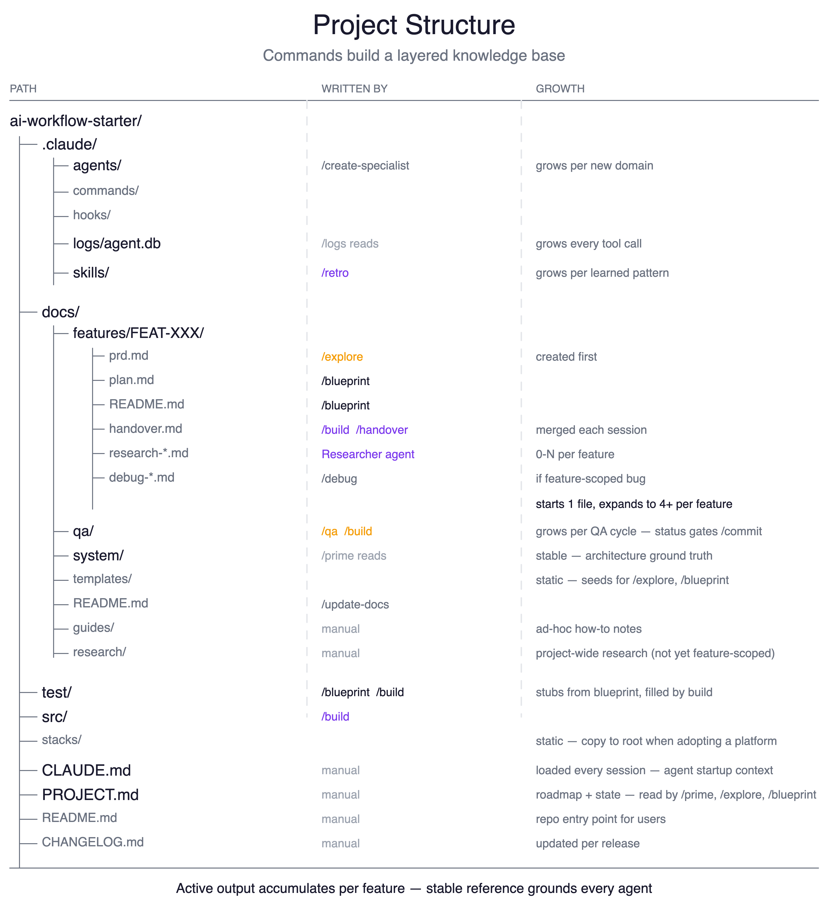

THE KNOWLEDGE BASE

Feature docs (docs/features/)
PRD, plan, handover, and QA report per feature. Nothing is thrown away. Feature 12 benefits from everything written in features 1–11.
Skills (.claude/skills/)
Cross-cutting patterns extracted by /retro after each feature. A debugging approach from FEAT-003 is available in FEAT-012.
Session continuity
/handover writes a token-budgeted summary before you stop. /prime loads it at session start. Each merge prunes stale context — handovers get sharper over time.